Guía de uso
Fotos claras y legibles
en cada diapositiva
Ajusta la luz, el color, el recorte y el DuoTone de tus fotos en el navegador y, muy pronto, directamente en PowerPoint.

Guía de uso
Ajusta la luz, el color, el recorte y el DuoTone de tus fotos en el navegador y, muy pronto, directamente en PowerPoint.
Índice
Image Lab ajusta las fotos de tus diapositivas como un programa de retoque: niveles, luz, color, recorte, rotación y DuoTone, con la vista previa siempre a la vista.
En el navegador
Abre niki977.github.io/ultraspeaker-image-lab en el ordenador o en el móvil. Cargas una foto, la ajustas y la descargas: en JPG, o en PNG si tiene partes transparentes.
En PowerPoint
Pestaña Inicio → grupo The Ultraspeaker → Image Lab. Seleccionas una foto en la diapositiva y el panel la sustituye por la versión ajustada, conservando el original.
Muy pronto
El panel para PowerPoint está en fase de prueba y estará disponible muy pronto. El capítulo 08 ya lo describe por completo.
Privacidad
Las fotos se procesan en tu dispositivo y nunca se envían a un servidor. En el navegador solo se guarda el idioma elegido, común a todos los Labs de The Ultraspeaker.
| Qué necesitas | Detalles |
|---|---|
| Versión web | Un navegador actualizado (Chrome, Edge, Safari, Firefox), también en el móvil |
| Panel de PowerPoint | Microsoft 365: Windows 2601 o posterior, Mac 16.105 o posterior, o PowerPoint para la web |
Arriba la vista previa se queda fija mientras recorres los ajustes; abajo, los botones para comparar y descargar.
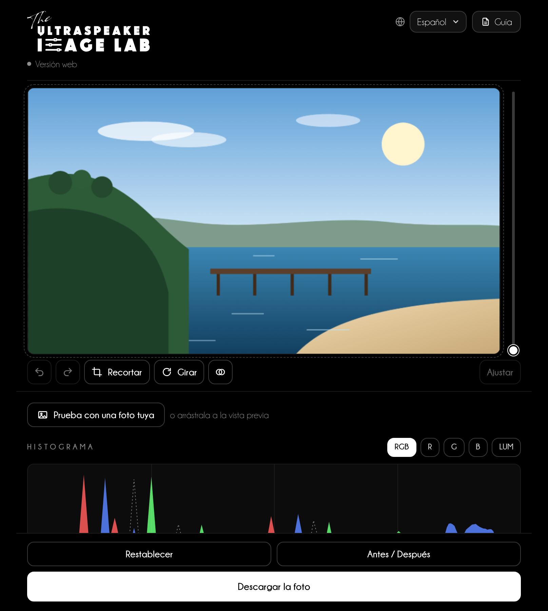
1 2 3 4 5 6 7Empieza con un estilo rápido y luego afina con los controles mirando la vista previa.
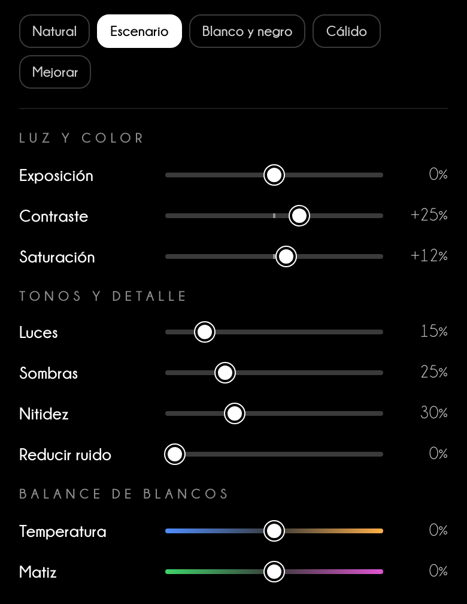
Conviene saber
Los estilos rápidos solo cambian la luz y el color: el recorte, la rotación, «Mejorar calidad» y el DuoTone se quedan como los has dejado.
El histograma muestra cuántos puntos de la foto hay en cada tono. Los tres tiradores de abajo deciden dónde empieza el negro, dónde está el gris medio y dónde acaba el blanco.
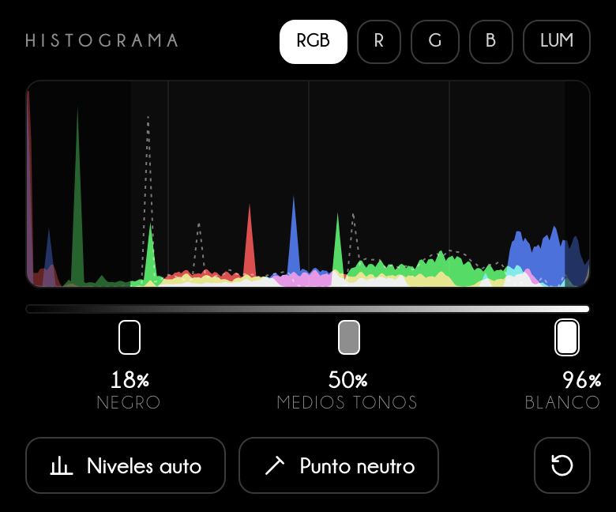
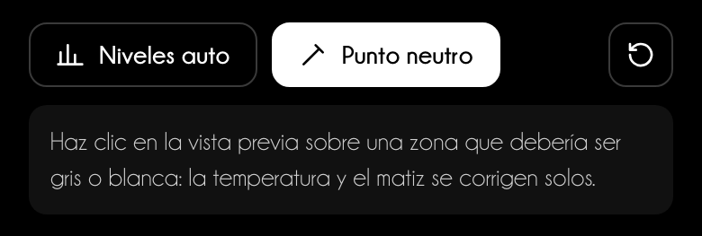
«Mejorar calidad» limpia las fotos hechas con poca luz; Duo & Tri Tone vuelve a colorear la foto con los colores de tu presentación.
Mejorar calidad
Haz clic en Mejorar calidad: Image Lab estima el ruido de la foto, lo reduce respetando los contornos, da nitidez a los detalles y aumenta el contraste local. Con Intensidad eliges cuánto aplicar; el tamaño de la foto no cambia.
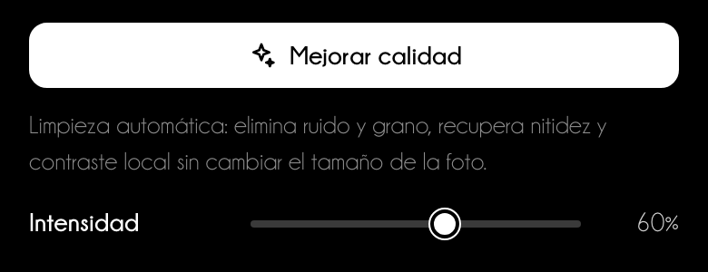
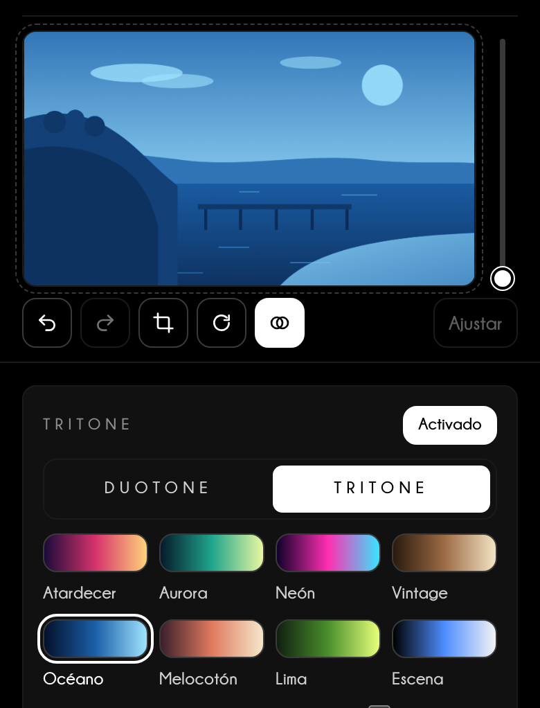
Conviene saber
Con el DuoTone la saturación no hace falta y desaparece; Temperatura y Matiz se convierten en «Filtro cálido/frío» y «Filtro verde/magenta» y desplazan la luz entre los colores, como los filtros del blanco y negro.
Cada formato solo fija la proporción: la foto conserva todos los píxeles de la zona que eliges.
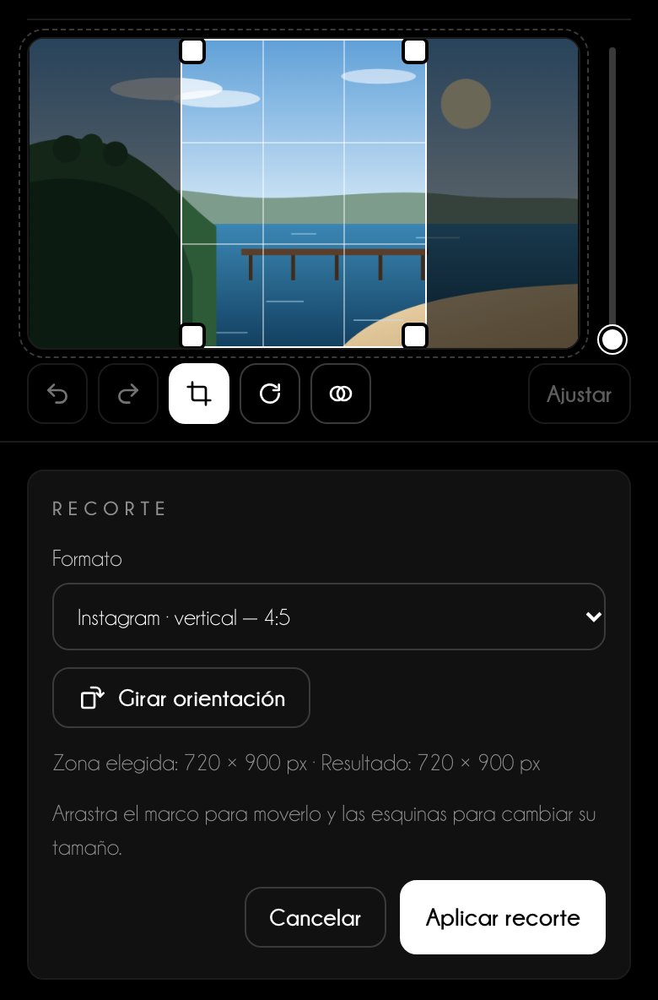
| Dónde va la foto | Formato en el menú | Proporción |
|---|---|---|
| Diapositiva a pantalla completa | Diapositiva 16:9 | 16:9 |
| Publicación cuadrada | Instagram · post | 1:1 |
| Publicación vertical | Instagram · vertical | 4:5 |
| Historias, Reels, Estado de WhatsApp | Instagram / Facebook · Historias y Reels | 9:16 |
| Publicación con enlace | Facebook · post, LinkedIn · post | 1,91:1 |
| Copia fotográfica | Foto 10 × 15 cm | 2:3 |
¿Necesitas un tamaño exacto en píxeles o en centímetros? Elige Tamaño personalizado…: es el único formato que lleva la foto a ese tamaño.
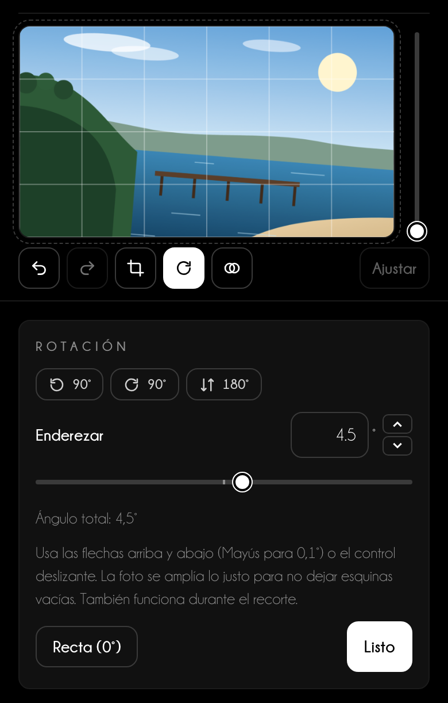
Antes de descargar, compara el resultado con la foto de partida.
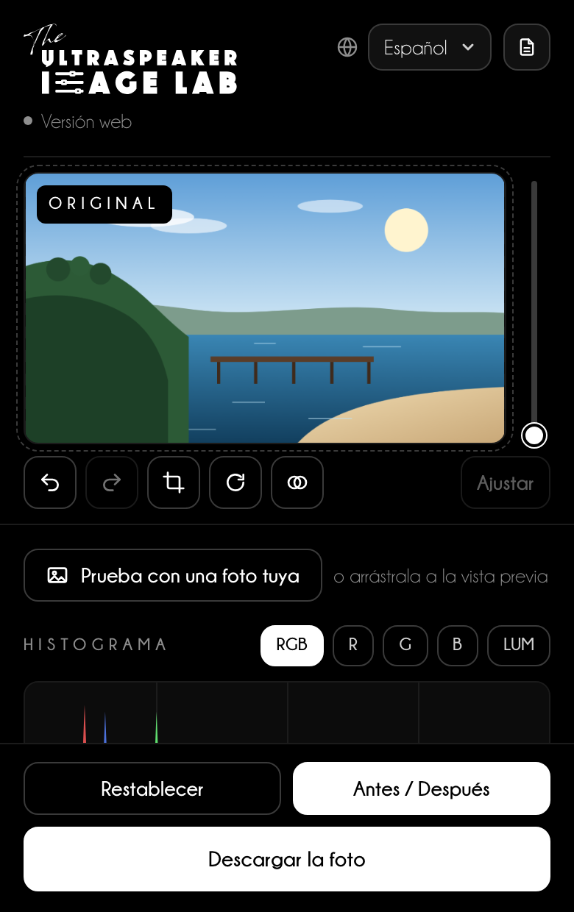
Muy pronto
El panel para PowerPoint está en fase de prueba y estará disponible muy pronto. Mientras tanto usa la versión web e inserta la foto descargada en la diapositiva.
En el panel los ajustes son los mismos de la versión web; solo cambia el último paso: la foto vuelve a la diapositiva.
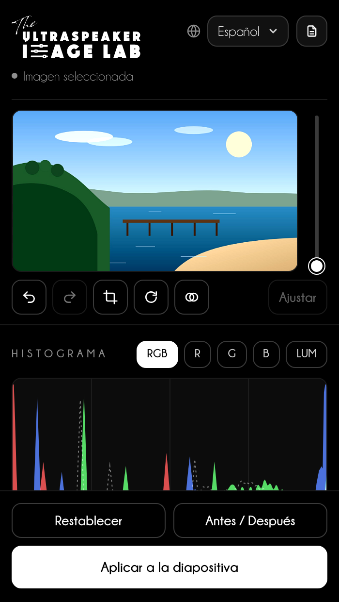
1 2 3Un proyector aplasta las sombras y apaga los colores: una foto perfecta en tu pantalla puede volverse gris en la sala.
Consejo de speaker
Para las fotos clínicas parte de Escenario y revisa el histograma: los detalles importantes no deben estar en la primera ni en la última décima parte. Si la sala es luminosa, lleva Sombras entre +25% y +40%.
Consejo de speaker
Usa los mismos ajustes en todas las fotos de una secuencia, por ejemplo antes y después de un tratamiento: mismo estilo, misma temperatura, mismo recorte. El público debe fijarse en el resultado clínico, no en una luz distinta.
| Uso | Recorte | Ancho mínimo |
|---|---|---|
| Foto a pantalla completa | Diapositiva 16:9 | 1920 px |
| Foto en media diapositiva | 3:2 o 4:5 | 1000 px |
| Dos fotos lado a lado (antes / después) | la misma proporción en ambas | 960 px cada una |
Asistencia
Escribe a info@theultraspeaker.com indicando si usas la versión web o PowerPoint (Mac, Windows o web) y, si puedes, adjunta una captura de pantalla.

Knowledge is not enough.
From expert to Ultraspeaker.
theultraspeaker.com · info@theultraspeaker.com